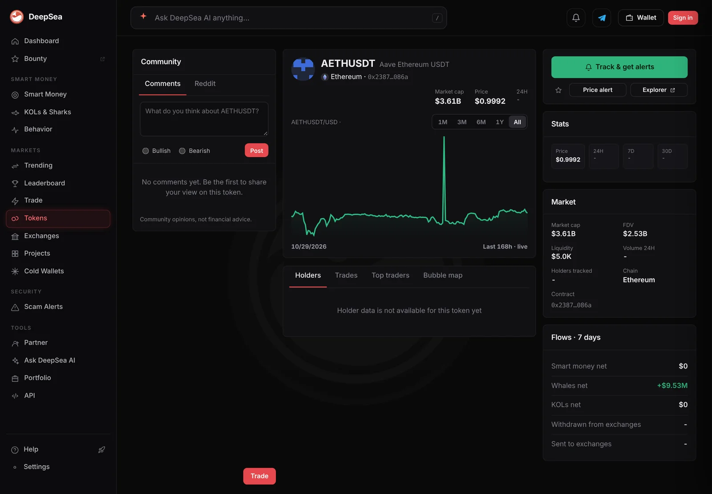

One shark sold $80.5 million of Aave-deposited USDT in an hour. Its 7-day loss: $1.87 million
The Ethereum wallet ending 4312 moved more than $280 million in a day, mostly in and out of Aave. DeepSea's PnL table shows it with the biggest 7-day realized loss it tracks.
Key points
- A shark wallet ending 4312 sold $80.5 million of aEthUSDT, Aave's receipt for USDT deposits on Ethereum, in the hour to 6:36 a.m. ET on November 5, 2026, DeepSea showed.
- Over 24 hours it bought $137.6 million and sold $145.7 million of tokens in 20 trades.
- DeepSea puts its 7-day realized loss at $1.87 million, the largest loss among the 111 wallets with 7-day figures in its PnL table.
 What DeepSea's data shows
What DeepSea's data shows
DeepSea's live feed totals trades by wallets it tags as sharks (large, active traders). In the hour to 6:36 a.m. ET on November 5, 2026, the top item on its selling list was aEthUSDT: $80,498,000 sold and $3,769,239 bought, all by one Ethereum wallet ending 4312, in 2 trades.
Over 24 hours the same wallet bought $137.61 million and sold $145.70 million in 20 trades. Most of it was aEthUSDT: $107.51 million bought and $115.70 million sold in 17 trades, a net $8.19 million out.
DeepSea's realized PnL table (profit or loss locked in by selling) lists the wallet at minus $1,865,123 over 7 days and minus $1,863,522 over 30 days. It won 28 of 47 trades in 7 days. DeepSea's data does not show the wallet's total balance or who controls it, so both are unknown. DeepSea's aEthUSDT page showed a 7-day whale net flow of plus $9.53 million at 6:46 a.m. ET; it does not split that by wallet.

Data: DeepSea (desea.io), checked November 5, 2026, 6:36 a.m. ET.
What is aEthUSDT?
Aave is a lending app. When you deposit coins, it gives you an aToken as a receipt. Aave's developer docs say aTokens are minted on supply, burned on withdraw and pegged 1:1 to the deposited asset, with interest paid by a growing balance. aEthUSDT is the receipt for USDT (Tether's dollar token) deposited on Ethereum. A logged sale means the holder withdrew USDT or swapped the receipt. The feed does not say which.
The numbers
The hour's $80.5 million sale was more than the rest of DeepSea's one-hour selling list combined. Second was USD₮0 on Berachain, at $3.0 million sold.
Wallet ending 4312, aEthUSDT trades
US$ million
To November 5, 2026, 6:36 a.m. ET. Source: DeepSea live feed.
Why it matters
A wallet this size moving $80 million out of one Aave market in an hour can shift how much USDT is free to borrow there, and the rate. The 7-day loss shows the wallet has not been winning lately, but DeepSea's data does not show what the trades were for.
LC Insight analysis
This section is our reading of the facts above, not a statement of fact.
- We think the 24-hour view matters more than the hour. The wallet put $107.5 million into the receipt token and took $115.7 million out, so the net change was about $8.2 million.
- Constant moves in and out of Aave look like active cash management, not a one-off exit. The data cannot show intent.
- Its $1.87 million 7-day loss is small next to the roughly $283 million it moved in a day. Its total balance is unknown.
What's next
- Whether the $80.5 million comes back into Aave
- Where the withdrawn USDT goes next
- The wallet's 7-day PnL in DeepSea's next reading
Disclaimer. This article is based on public information and the sources listed below as of the update time shown. It is for information only and is not investment, legal or tax advice. Figures may change as companies and authorities publish new data.
Sources
- DeepSea live feed (6-hour feed with 1-hour and 24-hour shark aggregates, fetched November 5, 2026, 6:36 a.m. ET)
- DeepSea, 7-day and 30-day realized PnL table (fetched November 5, 2026, 6:33 a.m. ET)
- DeepSea, aEthUSDT (Ethereum) token page (screenshot November 5, 2026, 6:46 a.m. ET)
- Aave, V3 developer docs: Tokenization (aTokens) (read November 5, 2026)